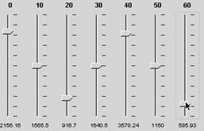

Once you have created dissimilarity file, you may cluster your data. To do this you must computer the cluster using one of four methods. Details for these four methods can be found in the Instructor's Guide.
Compute... (Control C)
Once you have created dissimilarity file, you may cluster your data. To do this you must computer the cluster using one of four methods. Details for these four methods can be found in the Instructor's Guide.
Hierarchical Clustering
Hierarchical clustering produces a tree-like structure (a dendrogram) by connecting genes according to the similarity of their expression data. When a gene joins with another gene or group of genes in the tree, the entire collection of genes is represented as a single pseudo-gene. The similarity between a given gene and the gene (or pseudo-gene) to which it is connected, is indicated by the horizontal length of the branches joining them. At each stage in the algorithm, the two most similar genes or pseudo-genes are joined together. The process continues until all genes have joined the tree.
QT Clustering
QT Cluster takes every gene under consideration and one at a time, builds a temporary cluster for each gene with a user-defined cutoff value for similarity. Whichever gene garnered the most genes in its cluster is used to create permanent cluster and all the genes associated in this cluster are removed from the list of genes for the next round of creating permanent clusters. QT Cluster repeats the process of creating temporary clusters, one gene at a time, and then forms the second permanent cluster using the largest temporary cluster. This process is repeated until all the genes are in clusters, or the remaining genes form clusters smaller than a user-defined size. These remaining genes (called singletons) are not presented in the clustering displays unless the user defined 1 as the minimal size for a permanent cluster.
When you use QT Cluster, you should adjust the threshold value. The default of 0.9 means correlation coefficients of +0.1 through +1.0. If you change the threshold setting to 0.2, you will cluster genes only if their correlation coefficients are +0.8 through +1.0. The range of settings for threshold is from 0 (correlation of +1.0) through 1 (correlation of 0, i.e. not similar at all) to 2 (correlation of -1.0; track opposite each other). Therefore, by setting the threshold at 2, you would get every single gene placed in one cluster.
K-Means Clustering
In this method, you determine a priori how many clusters there will be (K = the number of clusters) and MAGIC tool will make sure all genes fit into this number of clusters. This is the first step in Self Organized Maps but both methods begin with the investigator determining how many clusters to generate.
Supervised Clustering
This method performs a QT cluster but you can define the threshold and choose one gene around which you want your cluster built. This allows you to focus your research on your favorite gene. On the left, you see that "Use Existing Gene" is selected. Click on the "Select Gene" button and then choose form the genes in your gene list of the currently active expression file. Alternatively, you can deselect the "Use Existing Gene"
option and then click on "Create Gene". This produces
a window that allows you to manipulate the sliders to
create an expression profile for which you want to find genes with similar profiles (based on the threshold you choose). This is a quick way to find complex patters of interest to you.
